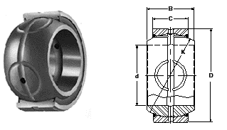
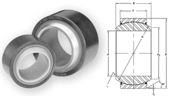
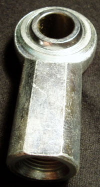
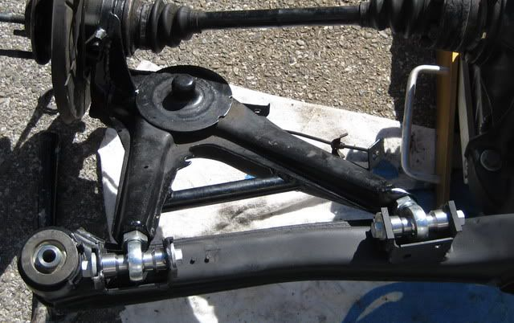

-
Nice. Simpler and cheaper. What about the different approach to the spherical bearing like these?

or lube free bearings.

http://www.rbcbearings.com/ -
reorienting the brackets would probably be more ideal, I'm not comfortable cutting/rewelding that much of the subframe.862sik wrote: Is there any issue. or is it just keeps binding?
What if I mount the bracket 5 degrees offset to accomodate for the binding…?*****************************
1988 300ZX Turbo SS
2000 BMW 323Ci
2003 BMW 325XiT -
One of the main differences between Gary's design and mine is the bearing size. Gary used a bearing that would fit the OEM bolt which is I think 14mm. It also fit inside the journal of the control arm and spacers he had made. I used a larger diameter bearing that required that I ream out the journal of the control arm to 1 7/16". Then we turned two straight sleeves to fit the journal to hold it in place. This required less machining and therefore less cost. Using the 5/8" grade bolt was also much less expensive than machining a special bolt (also stronger). Had to make the molds and pour my own grease seals (with Gary's help, Thanks!!). All in all the cost of components was about 1/2 what Gary had to spend to get his made. If there is any interest in doing this, I will post what we did in more detail.1artworkz wrote: Nice. Simpler and cheaper. What about the different approach to the spherical bearing like these?
or lube free bearings.
http://www.rbcbearings.com/…and how much HP do you have at 0 boost -
[quote]Dave88SS wrote:My friend is going to be doing my welding work. He works for a radiator company and welds all day. He is planning to use thicker steel and making new brackets. I'm going to be cutting 2 inches or more under the factory hole, just not sure how much to turn the bracket.Originally posted by 862sik
Will NOT doing anything to the bracket or putting in a bearing harm anything…will it rub the bushing more?My Build Thread -
[quote]862sik wrote: [quote=Dave88SS]I would suggest that you get a spare suspension and do a mock up to see what you get. It took me a couple of months messing with it to get all the parts the way I wanted them and I had several rear suspension set ups to work with. With all that we didn't know what we would get until we lowered the car. I did know that it wouldn't bind because I could check that on the bench.Originally posted by 862sik…and how much HP do you have at 0 boost -
I forgot who it was but he had a pretty fast drag z31 and he just drilled in his bolt for the control arm much lower than stock. He didn't say anything about binding. Or is it just because the bind happened with the poly bushings?My Build Thread -
[quote]Dave88SS wrote:I just had a thought. Since we are concerned about the binding of the control arm bushing....why not just (since im welding in new brackets) just enlarge the space on the rear crossmember that holds the control arm half an inch to accommodate the extra bind?? That would leave 1/4 of an inch clearence for binding.Originally posted by 862sik
Is there anything negitive by doing that?My Build Thread -
If you're moving the bracket around anyway, you might as well change the angle a few degrees so it doesn't bind up. Widening the bracket won't change the angle of the bolt relative to the bracket.862sik wrote:
I just had a thought. Since we are concerned about the binding of the control arm bushing....why not just (since im welding in new brackets) just enlarge the space on the rear crossmember that holds the control arm half an inch to accommodate the extra bind?? That would leave 1/4 of an inch clearence for binding.
Is there anything negitive by doing that?*****************************
1988 300ZX Turbo SS
2000 BMW 323Ci
2003 BMW 325XiT -
Oh I see. How much of an angle should I go for? I called my buddies and we will probably.do this in 2 weeks. I wish I had a spare control arm ready to mock up and fiqure out how much bind their will be. It sucks because depending on the severity of the bind, I do not know what camber I will be at in the end to see how much it will bind.
Would the bind be on only the outer control arm, or the inner as well?
Or a radiacal crazy idea would be to weld a heim joint to the part of the trailing arm that binds (cut off 3 inches or so, and weld a heim joint in place of where the control arm bushing goes. So instead of using bushings, you can just use a chromoly 3 piece heim mount to accomodate the bind. Isnt that the same thing you guys did, of course it doesnt retain the shape of the control arm but it seems as though it can work.
Not this particular one, id probably get a beefy chromoly one....

I know this is a front lower control arm, but same concept of cutting the bushing off and welding in a heim joint
Thanks.
Im really open to feedback. There is a shop locally I can get parts from.My Build Thread -
no guru's have any input?My Build Thread -
yes862sik wrote: blah blah blah lweld a heim joint blah blah blah
BMW Guys do it all the time on their race cars.
85 Turbo Slick Top
__________________________________________________ _____ -
[quote]james wrote:Interesting. That looks easily do-able. How bad would it be if I just leave things the way they are?Originally posted by 862sikMy Build Thread -
Well I mocked it up and it seems there is considerable about of binding with going 2 inches under the factory hole. We already made a template for the new bracket.
With the toe adjustment bracket, we are going to put the arm at maximum camber load and then remount the toe bracket so it wont bind.
Ill try to take some pictures on monday.My Build Thread -
So after slotting the holes I attached the control arms to see how much bind there really was on the inner control arm bushing. There was quite a bit. But upon inspection, I had a little wear from when i did a 1 inch slot when I first did the camber adjustment. Just some scarring on the toe bushings.
I was going to take off the toe brackets and weld it, but I was lazy and decided to get a hammer and see if I can get it to bend. It did. It seems now the bind is very minimal, I didnt move it much at all. A few taps at the top and bottom of the bracket seemed to work. It was getting late so ill double check in the morning on how much bind there is left.
The toe cages were removed and re-welded back in 1/4 inwards to help correct my toe. My toe was maxed out before. I somehow lost 2 of the cages, so only one side of each toe bracket has a cage (wtf!). Should be fine.
I got the new bracket welded in for the camber side, but we ran out of metal stock (wtf). So I have adjustment tabs only welded on the inner tab of the outer control arm on each side.
I been checking and rechecking that my measurments and alignments are spot on. If I can get maximum camber correction with a neutral toe, I will be one happy man. However only an alignment will tell. Ill play with it on the alignment rack in the middle of the weekMy Build Thread -
Just a question on theory here guys, but if both mounts (inner and outer) are moved UP equally in relation to the car on the ground, and in relation to the location of the wheel mounting hub; would that not correct camber some, as well as keep a more "factory" suspension geometry?
For instance, lowering the outer mount and keeping the factory location for the inner yields more POSITIVE camber when lowering springs are used. However, this of course leads to the binding problems, as well as having the suspension geometry essentially at a point out of it's Neutral, factory location. A point similar to the car having 400 lbs of extra weight in the back.
NOW, looking at the way the suspension moves (the control arms are mounted in such a way as to decrease camber and change toe when the suspension "loads" or is lowered by shorter springs.) in a sweeping motion. If both pivot points at the front of the trailing arm are moved Equally UP (on the crossmember), would that not return the control arms more toward their original "neutral" or "factory" settings as far as the "sweep" of the arm is concerned?
I know the picture is BASIC and not 3-d but if both points are moved up EQUALLY and in RELATION to the amount of change to the suspension, the Toe and camber should retain their original, manufactured, and designed function and no longer be at a point similar to that of an "over-loaded" suspension. Please correct me if my logic is wrong or if for some reason this shouldn't work.
If my car was more than a bunch of parts in several rooms in my house, I would test out my theory instead of bringing it up on here, but, it's in pieces so theres not much chance until this spring.
The picture I have attached below is a basic outline of my thinking. Something to think about?Originally posted by bronzemfp

Copyright © 2006–. All rights reserved. Privacy Policy